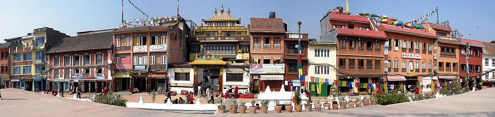
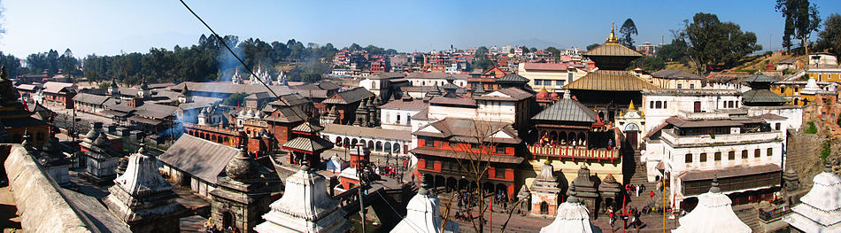

Kathmandu: A brief introduction
Kathmandu (/ˌkætmænˈduː/; Nepali: काठमाडौँ, Nepali pronunciation: [ˈkaʈʰmaɳɖu]) is the capital and largest city of Nepal, with a population of around 1 million. Also known as the city of temples. The city stands at an elevation of approximately 1,400 metres (4,600 feet) above sea level in the bowl-shaped Kathmandu Valley in central Nepal. The valley was historically called the "Nepal Mandala" and has been the home of the Newar people, a cosmopolitan urban civilization in the Himalayan foothills. The city was the royal capital of the Kingdom of Nepal and hosts palaces, mansions and gardens of the Nepalese aristocracy. It has been home to the headquarters of the South Asian Association for Regional Cooperation (SAARC) since 1985. Today, it is the seat of government of the Nepalese republic, established in 2008, and is part of the Bagmati Province.
Kathmandu is and has been for many years the centre of Nepal's history, art, culture, and economy. It has a multi-ethnic population within a Hindu and Buddhist majority. Religious and cultural festivities form a major part of the lives of people residing in Kathmandu. Tourism is an important part of the economy in the city. In 2013, Kathmandu was ranked third among the top ten upcoming travel destinations in the world by TripAdvisor, and ranked first in Asia. The city is considered the gateway to the Nepalese Himalayas and is home to several World Heritage Sites: the Durbar Square, Swayambhunath, Boudhanath and Pashupatinath. Kathmandu valley is growing at 4 percentage per year according to the World Bank in 2010, making it one of the fastest-growing metropolitan areas in South Asia, and the first region in Nepal to face the unprecedented challenges of rapid urbanization and modernization at a metropolitan scale.[3]
Etymology
The indigenous Newari term for Kathmandu valley is Yen. The Nepali name Kathmandu comes from Kasthamandap, which stood in the Durbar Square. In Sanskrit, Kāṣṭha (Sanskrit: काष्ठ) means "wood" and Maṇḍapa (Sanskrit: मण्डप) means "pavilion". This public pavilion, also known as Maru Satta in Newari, was rebuilt in 1596 by Biseth in the period of King Laxmi Narsingh Malla. The three-storey structure was made entirely of wood and used no iron nails nor supports. According to legends, all the timber used to build the pagoda was obtained from a single tree.[4] The structure collapsed during a major earthquake in April 2015.
The colophons of ancient manuscripts, dated as late as the 20th century, refer to Kathmandu as Kāṣṭhamaṇḍap Mahānagar in Nepal Mandala. Mahānagar means "great city". The city is called Kāṣṭhamaṇḍap in a vow that Buddhist priests still recite to this day. Thus, Kathmandu is also known as Kāṣṭhamaṇḍap. During medieval times, the city was sometimes called Kāntipur (Sanskrit: कान्तिपुर). This name is derived from two Sanskrit words – Kānti and Pur. Kānti is a word that stands for "beauty" and is mostly associated with light and Pur means place, thus giving it the meaning, "City of light".
Climate
Five major climatic regions are found in Nepal. Of these, Kathmandu Valley is in the Warm Temperate Zone (elevation ranging from 1,200 to 2,300 metres (3,900 to 7,500 ft)), where the climate is fairly temperate, atypical for the region. This zone is followed by the Cool Temperate Zone with elevation varying between 2,100 and 3,300 metres (6,900 and 10,800 ft). Under Köppen's climate classification, portions of the city with lower elevations have a humid subtropical climate (Cwa), while portions of the city with higher elevations generally have a subtropical highland climate (Cwb). In the Kathmandu Valley, which is representative of its valley's climate, the average summer temperature varies from 28 to 30 °C (82 to 86 °F). The average winter temperature is 10.1 °C (50.2 °F).
| Months | Jan | Feb | Mar | Apr | May | Jun | Jul | Aug | Sept | Oct | Nov | Dec | Year |
|---|---|---|---|---|---|---|---|---|---|---|---|---|---|
| Records high (celcius) | 24.4 | 28.3 | 33.3 | 35.0 | 36.1 | 37.2 | 32.8 | 33.3 | 33.3 | 33.3 | 29.4 | 28.3 | 37.2 |
| Average high (celcius) | 19.1 | 21.4 | 25.3 | 28.2 | 28.7 | 29.1 | 28.4 | 28.7 | 28.1 | 26.8 | 23.6 | 20.2 | 25.6 |
| Daily mean (celcius) | 10.8 | 13.0 | 16.7 | 19.9 | 22.2 | 24.1 | 24.3 | 24.3 | 23.3 | 20.1 | 18.5 | 13.4 | 18.9 |